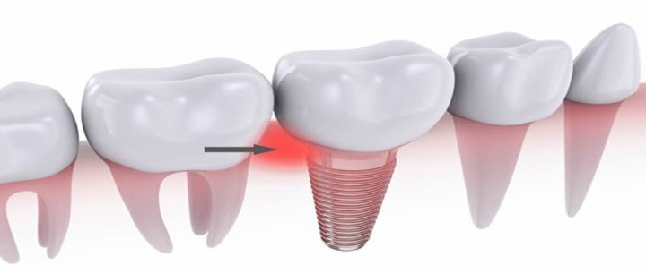

Dental Publications
This article explains the latest dental treatment techniques, and the most successful preventive measures for enjoying strong healthy teeth, in addition to dental implants, dental bridges, orthodontics, and other miscellaneous information

Best types of dental implants in turkey 2021
Broken or misaligned teeth may cause confusion sometimes, maybe ashamed to smile but must be well aware that the dental implant in Turkey has developed significantly in recent years, and therefore there are dental solutions to restore teeth and correct any deformation and deviation in the arrangement of teeth, using modern and multiple dental devices and materials.
An Overview of the dental implant
Dental implants are one of the treatments for replacing missing teeth. It became an integrated treatment method in the treatment of complete and partial tooth loss in dentistry. Dental implants have many advantages over traditional dentures. The dental implant is a component made of compatible materials, and it is implanted to provide stability and support for fixed or removable prosthesis.
Table of Content
Dental implant process timeline
The dental implant is done as follows:
- During Dental Implant, the surgeon performs a surgical incision to open the gums and expose the bone. Where holes are drilled into the bone, and a dental implant is placed. The implant will act as the root of the tooth, so it is implanted deep into the bone.
- Once the dental implant is placed in the jawbone, the Osseointegration begins i.e. the bone start to fuse with the surface of the implant, as the jawbone grows, it unites with the surface of the dental implant. This process, which may take several months, helps provide a solid foundation for your new prosthesis, just as your natural roots do.
- Abutment placement.
- When the osseointegration is complete, you may need additional surgery to place the abutment (the piece on which the crown will be attached finally). This minor surgery is usually performed with local anesthesia on an outpatient basis.
Abutment placement as follows:
- The surgeon reopens the gums to expose the dental implant.
- The abutment is placed on the implant.
- Then the gum closes around the abutment, not the over it.
After placing the abutment, the gums should heal for about two weeks, before fixing the crown.
Read more : Types of tooth decay, its stages and how to treat it
Best types of dental implants in turkey
- Zirconia dental implant: Zirconia has less flexibility, which can lead to more subtle fractures, but is also very solid and strong.
- Titanium dental implants: Titanium dental implants are very strong, tough, high bending properties, break resistance, and are made of metal. Titanium is the most common dental implant.
Immediate dental implant procedure
Immediate dental implants are dental implants that are placed in the jawbone immediately after tooth extraction. It is usually placed in the same visit of the tooth extraction, but it can be done within two weeks after the tooth extraction, and it can be considered an immediate dental implant as well.
Dental implants without surgery
This surgery is known as computer-assisted surgery, or simple surgeries and the dental clinics must be technically advanced to be able to place the implant without any incision or gingival separation.
In targeted implant surgery, computed tomography data is used to examine the position and for the planning of surgery, and since technology provides full accuracy, targeted implant surgery has the following advantages:
- Precise, safe and predictable surgery.
- Shorter working time.
- Shorter recovery time.
- No incision or stitches are required, leading to a more patient-friendly procedure.
- Less bleeding after the operation.
- A prosthesis can be placed immediately.

Dental implants advantages
- One of the Dental Implant advantages is speech improvement where with poorly fitted dentures, teeth can slide in your mouth, causing your words to mumble, but with dental implants, you can speak without worrying about teeth
- Facilitate eating is an advantage of the dental implant, as dental implants allow you to eat your favorite foods.
- One of the advantages of the dental implant is that it is convenient and comfortable, as dental implants eliminate the embarrassment of removing dentures.
- Dental implants give a more comfortable feeling.
- Dental implant improves the appearance.
- Dental implants boost self-confidence.
- It helps to improve oral health
Question and answer for dental implants
Dental implants are considered a safe tooth replacement procedure.
Oral surgeons and periodontists both receive advanced training in dental implant placement as part of their education. General dentists can also operate to complete advanced training in dental implant placement.
First, the implant, which looks like a screw or cylinder, is placed into your jaw. Over the next two to six months, the implant and the bone are allowed to bond together to form an anchor for your artificial tooth. During this time, a temporary tooth replacement option can be worn over the implant site. Later, an artificial tooth can be attached which resembles natural tooth in color, shape, and function.
Other teeth replacement options may appear to have a lower cost, but you will continue to pay that cost over and over, making them expensive compared to dental implants Dental Implant is a cosmetic and complex process. Implant posts and dental crowns add to the cost. Additional procedures if required like whitening, extractions, and so on.
A dental implant is considered a safe procedure but just like any other procedure some complications may occur like: • Infection at the implant site. • Injury or damage to surrounding structures, such as other teeth or blood vessels. • Nerve damage, which can cause pain, numbness, or tingling in your natural teeth, gums, lips, or chin.
Our main concern while removing the dental implant is preserving bone. The dental implant which is mobile or has minimal residual bone can be removed easily using traditional extractions instruments. While a firm dental implant needs to be removed with significant force without harming the bone.
The dental implant is designed as permanent tooth restoration, it can last up to 25 years with proper care and maintenance.
Infection in the Dental implant site can cause systemic illness if left untreated low-grade bacterial infections can have serious consequences.
Dental implant fails due to failing in Osseointegration which may be the result of: • Overheating of the bone during implant placement. • Contamination of the implant surface. • Systemic problems hindering Osseointegration.
No direct link was found between a dental implant and cancer.
Can you get dental implants with gingivitis ?
You can avoid infections around the implant completely, by brushing and flossing all your teeth daily, including the implant, and visiting the dentist at least twice a year, to conduct check-up and cleaning.
Rinsing the mouth with antimicrobial agents is also necessary to prevent infections. Likewise, topical antibiotics should be used under the gums and in the sinuses, which form pockets in the bone.

Dental Implants risks
Dental implant like any other surgery has some health risks and rare problems, yet when some risks occur they are usually minor and can be easily treated.
It includes the following:
- Inflammation at the implant site.
- Injury or damage to surrounding structures, such as other teeth or blood vessels.
- Nerve damage, which can cause pain, numbness, of your natural teeth, gums, lips, or chin.
- Sinus problems, especially when the dental implant is placed in the upper jaw, may penetrate one of the sinuses.
Ilajak Medical© | A passion for care
Latest Articles, Health News, Clinical Research, and more.
Keratoconus and cataracts , symptoms and types
What is Keratoconus, How it looks and what are the symptoms? Also, find out Keratoconus’s types and stages , Learn more with ILAJAK Medical.
Best Spa Resorts with Medical Services clinics in Turkey.
In this article, we will learn about the importance of health resorts and the treatment services they offer and the top and famous health & medical resorts in Turkey
Zirconia teeth type and costs in Turkey 2021
Zirconia dental crowns and bridges are used to treat and protect the affected teeth due to decay or fractures, etc, In this article we will learn about the advantages and drawbacks of Zirconia Crowns and bridges
Benefits of porcelain teeth and costs in Turkey 2021
Porcelain crowns and veneers are used to strengthen and protect damaged teeth due to decay or cracks or any other reason. In this article, we will discover dental porcelain and its advantages and risks.